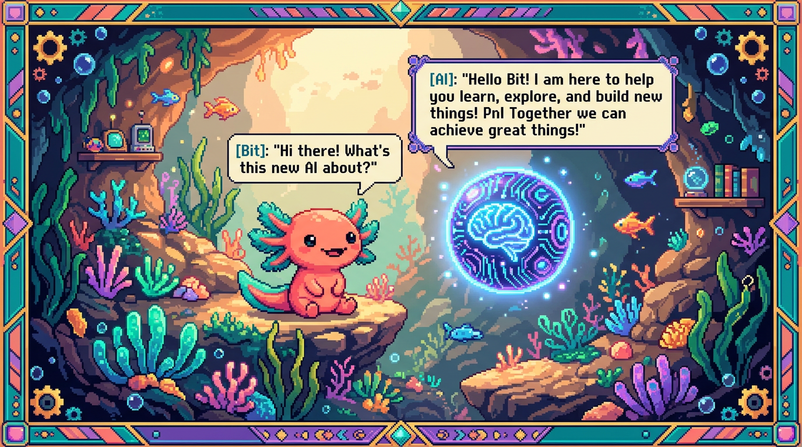

Capítulo 04 — Integrar IA

Meter inteligencia artificial en una app suena a película futurista, pero a estas alturas ya lo hueles: en el fondo es consumir una API (capítulo 02), solo que el servicio del otro lado es un modelo de IA. Tu sitio ya lo hace con Claude; Faro, con OpenAI. En este capítulo verás cómo funciona por dentro y, sobre todo, cómo pedirle bien las cosas a un modelo.
1. Un modelo de IA es una API más (con un detalle)
🟦 ¿Qué significa? — Modelo de lenguaje (LLM)
Un modelo de lenguaje grande (Large Language Model, LLM) es un programa de IA entrenado con cantidades enormes de texto, capaz de entender y generar lenguaje: responde preguntas, resume, redacta, clasifica. Claude (de Anthropic) y los modelos GPT (de OpenAI) son LLMs. Ojo con una idea clave: no "saben" cosas como una base de datos. Lo que hacen es predecir el texto que tiene sentido a partir de lo que tú les das.
🟦 ¿Qué significa? — Consumir un LLM por su API
Un LLM se usa igual que cualquier otra API (capítulo 02): le haces un POST a su endpoint, con tu clave de API en los headers y, en el body, el prompt (lo que le pides) junto a algunas opciones (qué modelo quieres, cuánto puede responder). Él te devuelve la respuesta en JSON. Y ya está: tu chat, en el fondo, no es más que un
fetchPOST a Claude.🟦 ¿Qué significa? — Modelo (model)
Cuando llamas a la API decides qué modelo usar. Casi siempre hay varios, cada uno con su equilibrio entre capacidad, velocidad y costo: Claude, por ejemplo, tiene modelos más potentes (de la familia "Opus") y otros más rápidos y baratos (tipo "Haiku"). Tu sitio usa
claude-haiku-4-5, un modelo ágil y económico, de sobra para un chat de bienvenida, y que además te ayuda a tener el gasto bajo control.
2. El prompt: cómo se le pide a un LLM
🟦 ¿Qué significa? — Prompt
El prompt es el texto con el que le pides algo al modelo: tu instrucción más el contexto. La calidad de la respuesta depende muchísimo de la calidad del prompt; ahí se juega casi todo. Escribir buenos prompts tiene hasta nombre propio, "ingeniería de prompts" (prompt engineering), y es una habilidad que se entrena.
🟦 ¿Qué significa? — Prompt de sistema (system prompt)
Muchas APIs separan dos cosas: - El system prompt: las instrucciones de fondo que definen el papel y las reglas del asistente ("Eres el asistente de Tunal Digital. Responde breve, en español, sobre nuestros servicios. No inventes precios."). - El mensaje del usuario: lo que la persona escribe en el chat. Tu Worker arma las dos partes: fija un system prompt (la personalidad de tu bot) y le pega encima el mensaje del visitante. Por eso tu chat "sabe" de qué hablar y no se sale del tono.
💡 Tip — Cómo escribir un buen prompt (lo que este manual te dio)
Un buen prompt es específico y da contexto, justo la habilidad que venías persiguiendo: - Dile el rol ("actúa como…"), el formato ("responde en una lista de 3 puntos"), el tono y los límites ("máximo 50 palabras", "no inventes datos"). - Dale ejemplos cuando puedas (enseñarle uno o dos ejemplos de lo que quieres se llama few-shot; tu Worker usa esta técnica). Vago: "háblame de marketing". Preciso: "En 3 viñetas y tono cercano, explica a un dueño de tienda por qué necesita un sitio web. Máximo 60 palabras. No menciones precios."
3. Cómo viaja una pregunta del chat (uniendo todo)
1. Escribes en el chat de tunaldigital.com y pulsas enviar.
2. main.js hace un fetch POST a tu Cloudflare Worker, con tu mensaje en el body (JSON).
3. El Worker (servidor) añade el system prompt y llama a la API de Claude,
con la CLAVE secreta (que vive solo en el Worker, nunca en la página).
4. Claude responde; el Worker te devuelve el texto.
5. main.js muestra la respuesta en pantalla (manipulando el DOM, Módulo 03).
Fíjate en que cada flecha es algo que ya conoces: fetch, JSON, async/await, headers, claves de API,
DOM. La IA nunca fue magia: es una API bien orquestada y bien protegida.
🔎 En tu código
Faro usa la API de OpenAI (
src/lib/openai.ts) exactamente igual, pero para otra tarea: le manda el README y los datos de un proyecto y le pide que resuma su estado, progreso y roadmap, devolviéndolo como JSON estructurado. Es el mismo patrón de siempre (prompt → respuesta), solo que aplicado a analizar en lugar de chatear.🟦 ¿Qué significa? — Token (en el contexto de IA) y por qué importa el costo
En IA, un token es un trocito de texto: más o menos una palabra, o un pedazo de una. Las APIs de LLM cobran por tokens, tanto los que envías como los que genera. De ahí que los límites importen tanto: tu Worker recorta el largo de los mensajes y acota el uso para que el chat siga siendo útil sin que se te dispare la factura (tu sitio tiene un tope de gasto mensual). Dicho corto: controlar tokens es controlar el costo.
✅ Checklist — ¿ya domino esto?
- [ ] Entiendo que un LLM se consume como cualquier API (POST + clave + prompt).
- [ ] Sé qué es un modelo y por qué elegir uno rápido/barato (Haiku) controla el gasto.
- [ ] Sé qué es un prompt y un system prompt, y cómo escribir uno bueno (específico, con rol/formato/límites).
- [ ] Puedo narrar cómo viaja una pregunta del chat de mi sitio (navegador → Worker → Claude → vuelta).
- [ ] Entiendo qué es un token en IA y su relación con el costo.
🧪 Ejercicios
- De vago a preciso. Reescribe este prompt para que sea bueno: "escribe algo sobre mi negocio". (Inventa rol, formato, tono y un límite de palabras.)
- System vs. usuario. Da un ejemplo de system prompt para un bot que ayuda a reservar citas, y un ejemplo de mensaje de usuario.
- El flujo. ¿Por qué la clave de Claude vive en el Worker y no en
main.js? (Une con el capítulo 02.) - Costo. Explica por qué limitar el largo de los mensajes ayuda a controlar la factura de la IA.
- Tarea distinta. Faro no chatea: pide a la IA un resumen en JSON. Inventa un prompt que
le pida resumir un proyecto en un JSON con campos
descripcionysiguiente_accion.
➡️ Siguiente: Capítulo 05 — Construir y proteger una API.